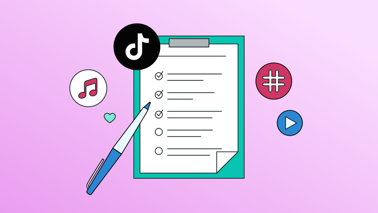
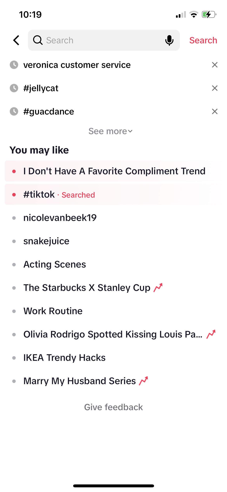
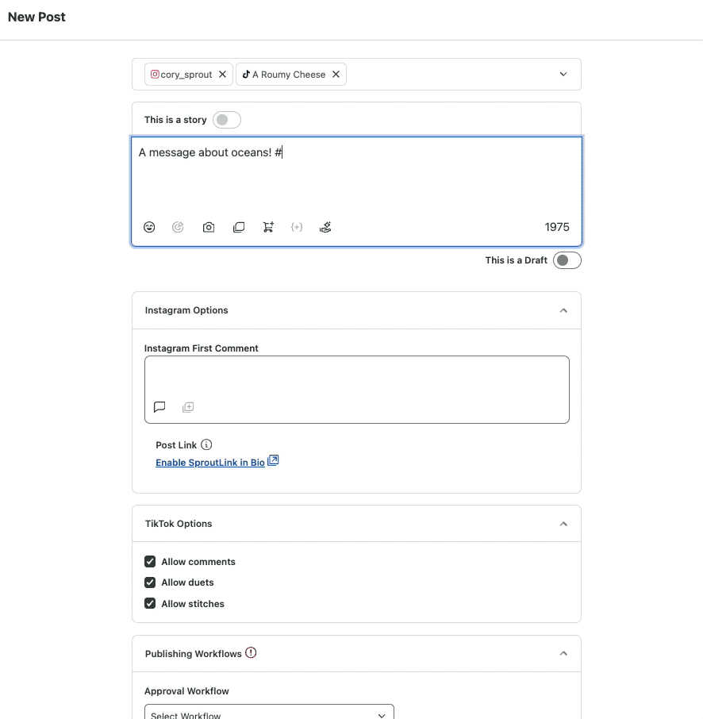

How to use the best hashtags for more views in 2024
Hashtags have become a universal tool for discovering topics on social media and other online platforms—and TikTok is no different. Using hashtags can help you find content related to your niche and help people to find your content.
With over one billion monthly active users (and counting), it’s important to stand out among the noise. And TikTok hashtags can be a great way to do that.
Throughout this article, learn more about what TikTok hashtags are, benefits to using them, top TikTok hashtags for 2024 and tools that can help you find the best hashtags.

What are TikTok hashtags?
TikTok hashtags are words or key phrases that are denoted by the hashtag (#) symbol and used to categorize content on the platform so users can browse content easily.
Hashtags on TikTok work just like they do on platforms like Instagram and Twitter. Adding a certain hashtag to a video will make the content discoverable when someone searches for the hashtag. This allows users to join in on trending or relevant conversations using the right hashtags.
For example, someone searching for the hashtag #gaming on TikTok can discover video content related to gaming only if that hashtag has been added to the video description. Or if someone searches for the hashtag #BookTok, they’ll find content from that specific TikTok subculture.
Being an entertainment-focused platform, TikTok naturally sees the most hashtag views for entertainment content with 535 billion views. The second most popular category is dance, with 181 billion hashtag views. Pranks, fitness and sports, home renovations/DIY and beauty/skincare are other popular categories by number of hashtag views.
7 Benefits of using hashtags in your TikTok strategy
Incorporating hashtags into your TikTok marketing strategy is a must. Learn seven benefits your account can get from using hashtags in your video captions.
1. Increase visibility
Adding hashtags to your captions can help you get your content in front of TikTok users who aren’t already following your brand. When you use a hashtag relevant to the content of the video, you could attract people who are already interested in the topic.
For example, adding the hashtag #DIYProject could help your video show up in the search results of people who are searching for the hashtag.
2.Boost engagement
Better visibility could also translate to higher engagement rates. When more people see your TikTok content, there’s a chance many of them would want to engage with it by liking or commenting on it.
3.Build community
Branded TikTok hashtags are a great way to create a community around your business. You could encourage your audience to create videos using a brand-specific hashtag. This will help you build a strong community of followers who enjoy sharing content related or relevant to your business.
For example, Jellycat has managed to build a community around the #jellycat hashtag. Users post about their own Jellycat stuffies, talk about launches and more. The hashtag has generated 1 billion views, proving just how popular these videos are.
4.Identify competitors
Popular industry-specific hashtags can also help you uncover other businesses that are using the hashtag. This is a great way to identify competitors that you may not already be aware of. And you can conduct a competitive analysis, checking out their profiles and content to benchmark your TikTok performance against theirs.
5. Get great TikTok content ideas
Searches for category-specific hashtags will bring up results for top-performing content relevant to the hashtag. This is a great way to see what resonates with your target audience and get content inspiration.
6. Find relevant influencers
You can also use hashtag searches to discover influential accounts that are creating content relevant to the hashtag. If you plan on running an influencer marketing campaign, this is a great way to discover TikTok influencers you can partner with.
7. Jump in on trends
TikTok trends come and go, but capitalizing on the right ones at the right time can help boost visibility and engagement. When you create content based on trending hashtags, you’re showing your followers that your brand is fun and relevant.
Discover current trends by tapping the search icon in the top right corner of your TikTok home feed. You’ll see popular trends as well as topics the app thinks you’ll like based on your activity. Browse TikTok like someone in your target audience might to see what types of content ideas pop up.

Top TikTok hashtags in 2024
Curious on how to find the trending hashtags on TikTok? We’ve got some of the top TikTok hashtags in a number of industries for inspiration.
50 Popular hashtags on TikTok
#fyp (55.2T views)
#foryou (31.6T)
#viral (21.5T)
#foryoupage (19.4T)
#tiktok (7.2T)
#fy (6.1T)
#trending (5.4T)
#funny (4.2T)
#duet (3.5T)
#comedy (2.2T)
#love (1.6T)
#meme (1.3T)
#tiktokindia (1.1T)
#funnyvideos (995.2B)
#learnontiktok (855.4B)
#music (823.3B)
#video (752.9B)
#like (739.7B)
#memes (650.4B)
...
Top 10 Trending TikTok hashtags
Keep in mind that this changes week to week, so you’ll need to check out what TikTok is saying their trending hashtags are right now.
#snow (234M)
#valentinesday (213M)
#snowday (21M)
#roscadereyes (76M)
#sundayfunday (17M)
#anyonebutyou (115M)
#texans (44M)
#nflplayoffs (114M)
#hallebailey (57M)
#nieve (15M)
Top 10 TikTok hashtags for B2B
#learnontiktok (855.4B)
#smallbusiness (127.7B)
#business (61.9B)
#smallbusinessowner (14B)
#supportsmallbusiness (11.8B)
#smallbusinesstiktok (7.3B)
#smallbiz (7B)
#businesstips (3.6B)
#shoplocal (2.2B)
#smallbusinesstips (1.5B)
TikTok hashtag generators and discovery tools
Looking for even more inspiration for TikTok hashtags? There are a number of tools available to help you find the perfect hashtags for every video you publish. These four are the perfect starting point.
Sprout Social
Sprout Social comes in handy for a number of tasks—monitoring online conversations and discovering trends. Find related hashtags as with our Suggested Hashtags feature in the Compose box as you create posts. Compose automatically suggests semantically related hashtags and their number of TikTok views as you begin adding hashtags to your post.
Connect your TikTok account to Sprout Social to take advantage of suggested hashtags.

Hashtag Expert
Hashtag Expert is an easy-to-use smartphone app that can help you find hashtags based on a starter keyword, a category relevant to your industry (of which there are 35 to choose from) or a group of hashtags you’ve used before. Download Hashtag Expert and start compiling hashtags for your video content.
You can easily get a group of relevant hashtags for your video and save them for later, or copy them right inside the app to then paste into your TikTok caption. Plus, you can get access to daily trending hashtags to help you discover even more content ideas.
TikTok Hashtags
TikTok Hashtags is a basic hashtag generator that can help you find a number of related hashtags.
Start by typing in a hashtag like #style and generate a handful of relevant and popular hashtags that can help increase visibility on your content. This is a completely free tool that’s easy to use for each of your new videos.
For the record, TikTok has no association with this website.